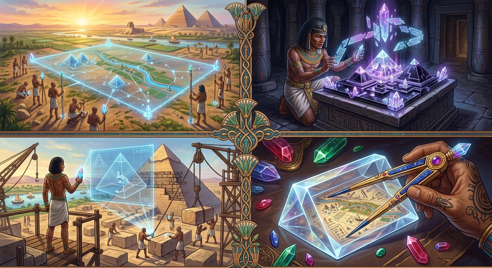
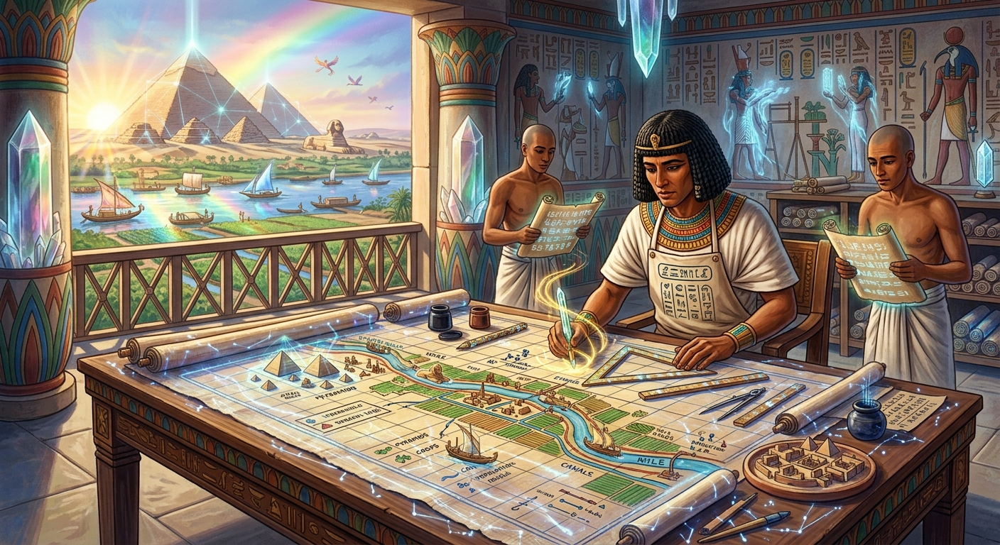

How the Ancient Egyptians Practiced GIS — Without a Single Computer

Surveying the Nile, circa 2600 BCELong before satellites and coordinate systems, Egypt already had the two things every GIS depends on: a reason to measure the land, and a reliable way to do it. Every year the Nile flooded and wiped out field boundaries, so the state needed the land re-measured, re-recorded, and re-taxed on a fixed schedule. That yearly problem is why Egypt produced the world's first professional surveyors.
- The Harpedonaptae, "rope stretchers": specialist surveyors who re-marked farm boundaries after every flood, using cords knotted at equal intervals as a measuring tape.
- The 3-4-5 rope triangle: stretching a 12-knot rope into a 3-4-5 triangle gave a perfect right angle — the same Pythagorean ratio still taught in surveying today.
- Plumb bobs and sighting rods: used to hold a true vertical line, level foundations, and carry a straight line across long distances.

Recording the cadastre, Nile DeltaMy take, as a GIS engineer
What strikes me most about the harpedonaptae isn't the rope — it's the workflow. They were running an annual data-collection cycle: survey the land, record it against a known reference, hand it to the state for tax and planning decisions. That is, in plain terms, a cadastral GIS running on papyrus instead of a database.
The pyramids push the point further. The Great Pyramid's sides are oriented to true north within a few arc-minutes — a level of precision researchers still study today, most likely reached through careful stellar observation or tracking a sun-shadow across the equinox. No GPS, no total station, just patient fieldwork and geometry. It's humbling, and it's exactly the mindset I try to bring into every map I build.
Same Job, 4,500 Years Apart
Find the Shortest Route
Click a start point, then a destination, to draw the shortest route between them.
GIS Mini-Tools
Small geospatial utilities, calculated live in your browser — no server round-trip.
📍 Coordinate Converter
Decimal Degrees ⇄ Degrees/Minutes/Seconds
🛰️ UTM Zone Finder
Find the UTM zone and EPSG code for any lat/lon